3. Meetings¶
3.1. Meeting¶
A Meeting is not as in depth as a Conference and is made for smaller events. Within a Meeting you can find the modules:
- General settings: Where you can manage the general settings of the meeting (e.g. title, location etc.)
- Timetable: In which you can directly add Sessions, Contributions, and Breaks.
- Material: Where you can upload material that will be attached to the meeting. The material can be slides, videos, minutes etc.
- Participants: you can add all the participants for the Meeting or you can open the participation so users can apply for it.
- Evaluation: You can submit an evaluation form to be completed by the participants. You can set the questions, edit the form and the results and preview it in the different tabs available
- Lists: Relevant lists of users, such as list of all sessions’ conveners etc
- Protection: Set the access control for the meeting
- Tools: Where you can set alarms, clone the conference etc.
- Logs: List of all the actions performed on the whole of the meeting
3.2. Creating a Meeting¶
To create a meeting, click on Create -> Meeting in the top blue menu bar. You will be presented with a form you need to complete. First, you need to choose the category in which your meeting will be created. Then, enter the basic information (title, start/end date etc.); you can choose the default style in which the Meeting will be displayed (see Meeting Display Area). Finally, set the access protection. Click on Create meeting. You will be redirected to the meeting’s Management Area.
3.3. Meeting Management Area¶
The Management Area allows you to control the different parts of your meeting. The following sections will show each option of the Meeting Management Area.
Clicking on the link Switch to event page will take you to the event page of the meeting.
3.3.1. General Settings Management¶
In General Settings, you can edit the title, description, place, start/end date, timezone, default style, event type. You can add a support e-mail and modify its caption; it will be displayed in the event page. It is also possible to create a short display URL, used as a shortcut to the event page. You have the possibility of changing the default style, (see Meeting Display Area) . To edit the visibility, see visibility in General Settings for conferences. Finally, you can add or remove any chairpersons.
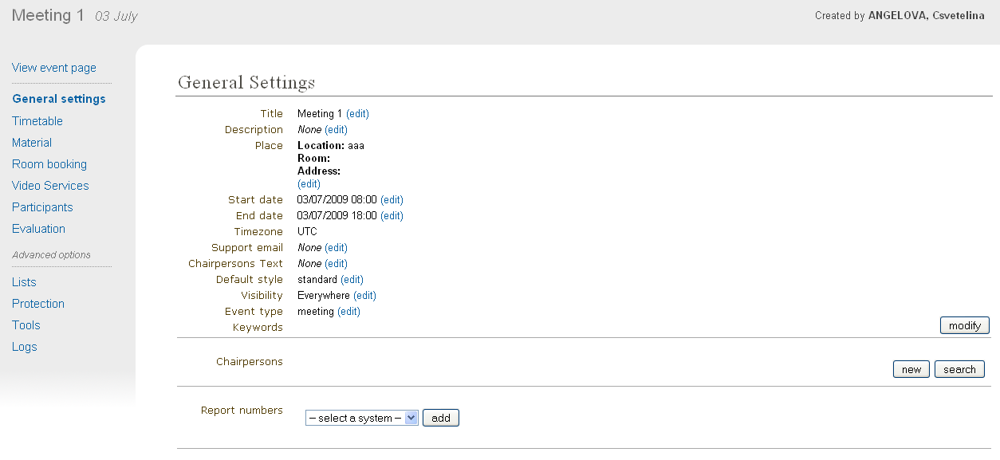
3.3.2. Timetable Management¶
The Timetable Management allows you to organize your meeting by using sessions (groups of contributions), contributions (presentations), and breaks.
The management of the timetable is the same as for conferences. The only difference is while adding contributions. In conferences, you can add unscheduled contributions to the timetable. In meetings, unscheduled contributions don’t exist, therefore you will always need to create the contribution.
Here, we will just explain how to create contributions. For more details and further explanations about the Timetable Management see Timetable Management for Conferences.
3.3.2.1. Adding Contributions¶
You can directly add contributions into your timetable using the Add new > Contribution at the top of the timetable. This will open a pop-up with a form to create a new contribution.

Within this form, you can define the name, description, location, presenters, the starting time and duration of this contribution.

In order to edit the contribution, you can click on it and a edition balloon will show up. In this balloon, you can modify the timing or the whole contribution.
3.3.2.2. Session Management¶
3.3.2.3. Contribution Management¶
3.3.3. Material¶
Here, you can upload any material you wish to attach to the meeting.
The material can be video, slides, minutes etc. You can modify the material
by clicking on  or to delete it by clicking on
or to delete it by clicking on  .
.

3.3.5. Video Services¶
Similar to lectures; see Video Services for lectures
3.3.6. Participants¶
You can access the participation module from the option Participants in the menu on the left.
The module is divided in different tabs (more detailed in the following subsections):
- Setup: configuration of the participation module.
- Participants: it shows the list of participants. Managers can perform several actions on the list, such as adding new participants, removing, inviting, etc.
- Statistics: it shows the number of participants that have attended, declined participation, pending, etc.
- Pending: list of all the users that have applied for participation and awaiting the approval or refusal.
- Declined: list of the participants that have been declined for the event.
3.3.6.1. Setup¶
In this tab you can setup the participation module. The options that you can enable/disable by clicking in the red/green squares are the listed below.
- If a participant is added by the event managers, an email notification will be sent to him.
- Show the list of participants in the event page-
- Allow the users to participate in this event by showing a link in the event page.
- Approve the participation request by the event managers.
- Setup the maximum numbers of participants where 0 means unlimited.
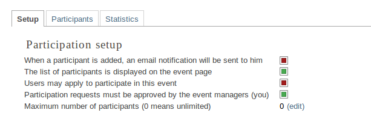
3.3.6.2. Participant list¶
In this tab, one can view the list of all the participants. You can add or remove participants (as a manager), mark as present/absent, ask for excuse, send email etc. You can also export the list of participants to Excel by clicking on the Excel icon on the button bar.
The event manager can add participants in the two following ways:
3.3.6.2.1. Manager adds participants¶
In order to add participants, click on
- Add >*Indico User / Group* if the participant or the e-group exists in Indico database;
- Otherwise, click on Add->New user.
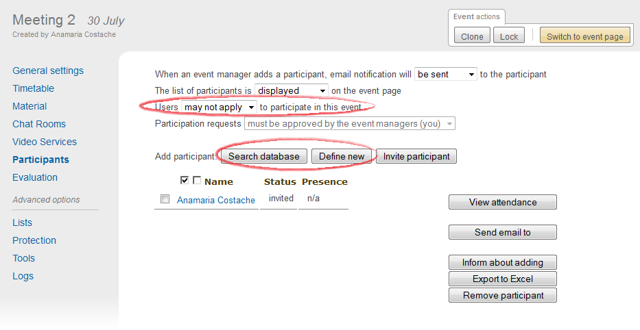
3.3.6.2.2. Manager invites participants¶
To do so, click on Add > Invite. The participant(s) invited will receive an email informing them they have been invited to an event. This email will contain a link they will have to use to accept/reject the invitation.

When they will open the link, the following window will appear:

They will then need to click on Accept or Reject.
3.3.6.3. Pending list¶
As explained in Setup you can setup the approval to be made by the event managers.
Users will be able to apply from the event page, by clicking on Apply here.

A window will appear:
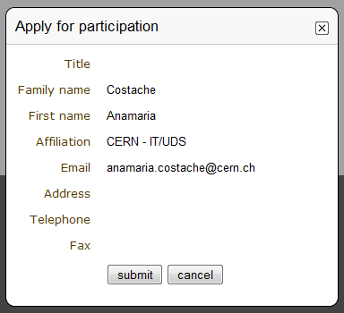
To apply, you will need to click on Ok
If the manager chooses to approve the requests for participation, he will see the tab Pending highlighted:

To accept or reject a request, he will need to click on the tab and the following window will appear, where he can manage the requests. When you reject an application you can choose whether to send an email or not.

3.3.6.4. Declined list¶
This tab shows the list of the participants that applied for participation and their applications were declined.
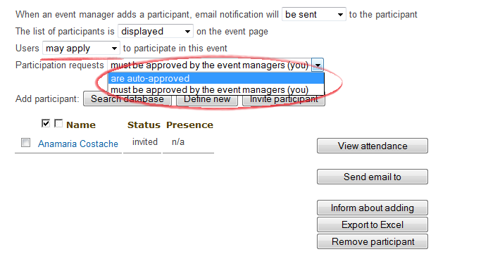
3.3.7. Evaluation¶
Same as for lectures; see Evaluation .
3.3.8. Lists¶
See Lists Management for Conferences.
3.3.9. Logs¶
See Logs Management for Conferences
3.3.10. Protection Management¶
Protection in a meeting is the same as in a Conference. There is Modification Control, Domain Control, and Access Control. When adding to the Access and Modification lists, you can also add Groups of users if any have been defined by Administration.
Modification Control Only the managers listed in the modification control, the creator of the meeting, and any administrators can access the Management Area of the meeting. However, you can add a Modification Key which means anyone with this key can modify the meeting without logging in.
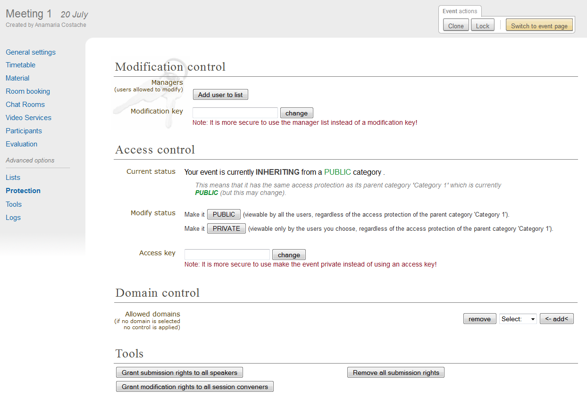
Access Control When the meeting is public, anyone can view the meeting including the details, timetable, material, etc. When the meeting is private, only those in the access list, meeting managers, and administrators can view the meeting. When it is inheriting, its access protection will be the same as its parent category. Changing the access protection of the parent category will change the access protection of the meeting (see Access Control Policy)

If the conference is PRIVATE the event manager will be able to set a ‘Contact in case of no access’, so users with no access will know who to contact in order to request access.
Also, when private you can also add an Access Key which means anyone with this key can access the meeting without logging in.
Domain Control This is available for public meetings. It allows you to specify which domain can access the meeting. For instance, choosing CERN will mean the meeting is only accessible for people inside the CERN domain.
Material Visibility By default a material will always be visible in the timetable, even if it is private (the user will be redirected to a login screen or access key prompt when clicking on it). You can force the material to be hidden for non-authorized people by using the Visibility to unauthorized users section in the material access control page.
3.3.11. Tools Tab¶
The meeting Tools allow you to make certain actions on the whole of the meeting. See following sub-sections.
3.3.11.1. Deleting a Meeting¶
The Delete meeting option will delete the whole meeting. You will be asked to confirm deletion beforehand.
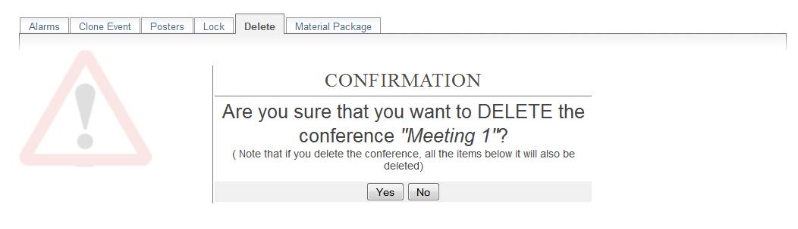
3.3.11.2. Cloning a Meeting¶
Clone the meeting if you would like to make another meeting exactly the same. You have the option to clone it once, at fixed intervals, or on certain dates. For more on cloning, see Clone event for conferences.
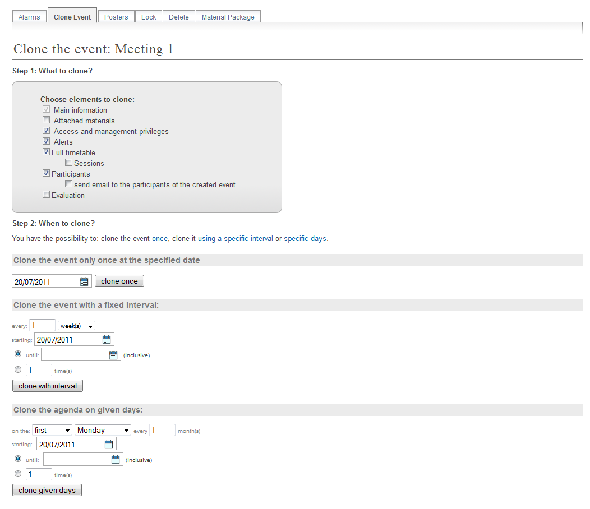
3.3.11.3. Packaging Material¶
Using the Material package option you can create a package of all the materials that have been used in the meeting.
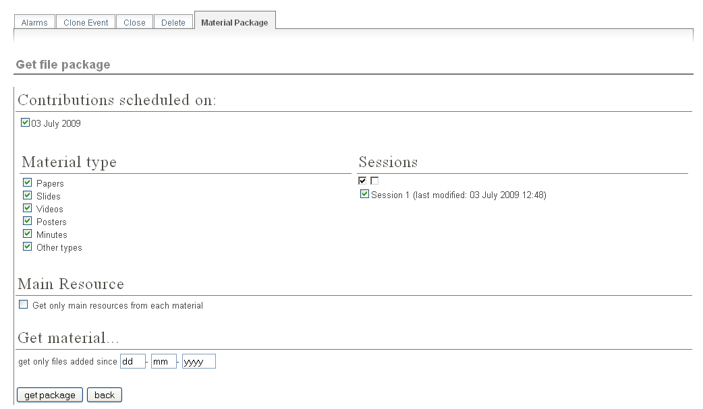
3.3.11.4. Alarm Control¶
You can set an alarm/reminder to alert people about the meeting. The alert will be in the form of an email, and in the date that you have selected.
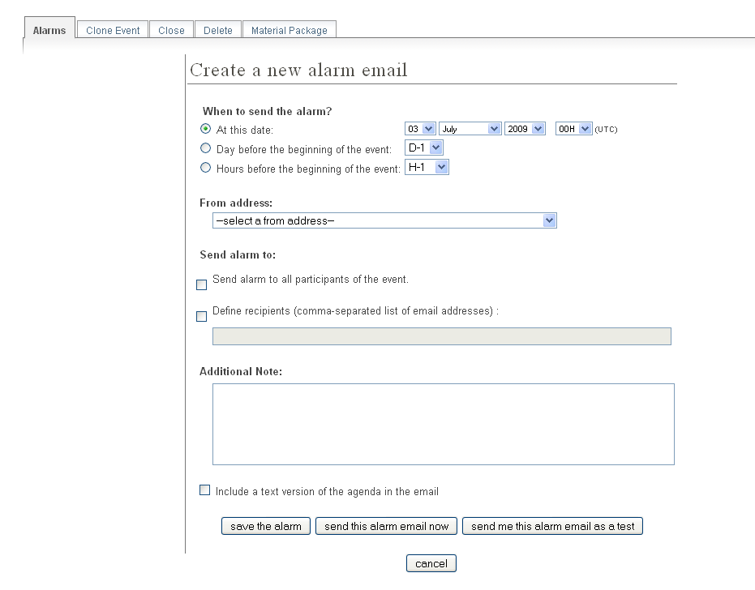
3.3.11.5. Posters¶
You have the possibility of creating posters for your meetings. You can create your own, or create one from a template.
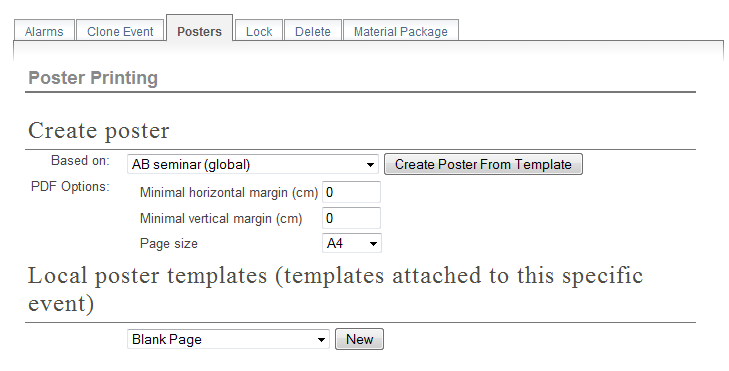
3.3.11.6. Lock¶
It is possible to lock the meeting. If you lock the event, you won’t be able to change its details anymore. Only the creator of the meetings or an administrator of the system/category can unlock an event. You will be asked to confirm.

3.4. Meeting Display Area¶
The Meeting Display is the view that users of the meeting will see. If the meeting is public they will not need to log in to view it. It is also the area in which you can access the modification areas if you have access rights. There are various views/styles in which the meeting can be displayed; the following sections show the different views and displays.
3.4.1. Indico Style¶
This is the default view for meetings in Indico. If you have
modification rights to any parts of the meeting you will be able
to access the Management Area by clicking the icon  .
.
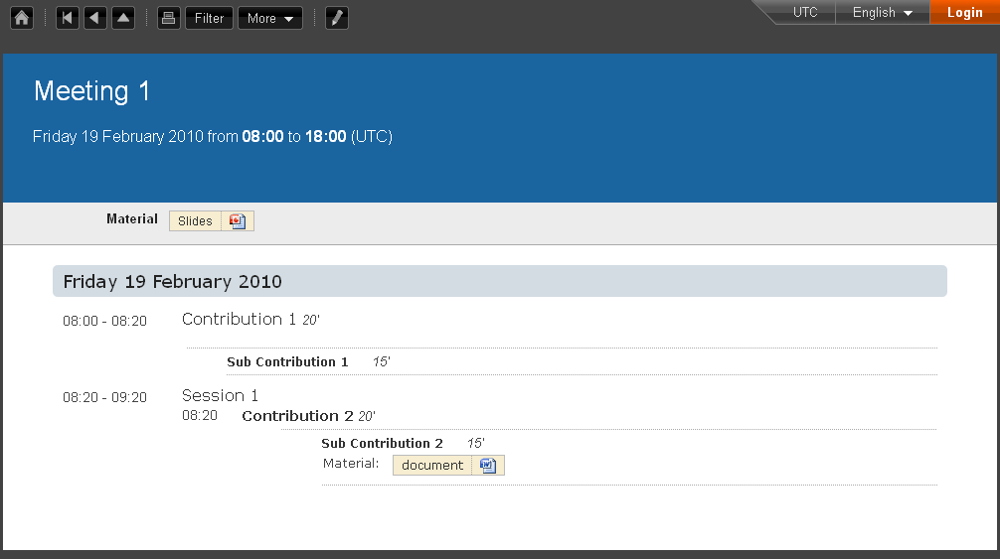
You can see a bunch of additional buttons next to the navigation options on the top left of the page:
 This will print a printable version of the display area
This will print a printable version of the display area
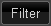 This will let you set filters to focus on events depending on their date or the session they are included in.
 This button allows you to use the following additional features:
This button allows you to use the following additional features:
- Export to ICalendar of PDF formats
- Download a package with all the material linked to the meeting
- Change the style of the display. The following sections give you some examples of available styles.
The other icons are:
 : Gets you back to the Indico homepage
: Gets you back to the Indico homepage : Brings you to the oldest event in the category your event belongs to
: Brings you to the oldest event in the category your event belongs to : Brings you to the previous event in the category your event belongs to
: Brings you to the previous event in the category your event belongs to : Brings you to the category event overview your event belongs to
: Brings you to the category event overview your event belongs to : Brings you to the next event in the category your event belongs to
: Brings you to the next event in the category your event belongs to : Brings you to the newest event in the category your event belongs to
: Brings you to the newest event in the category your event belongs to : From Manage , you can:
: From Manage , you can:- Edit event: this will lead you to the management area of the meeting, same as for PENCIL
- Clone event: Leads you to the tab Clone Event in the Tools option; see Cloning a Meeting
- Edit minutes: add and edit your minutes. When you add minutes, the following appears in the event page:
 Clicking on Minutes on the left will open the minutes in the same page; clicking on the icon on the right will open the minutes in a new tab
Clicking on Minutes on the left will open the minutes in the same page; clicking on the icon on the right will open the minutes in a new tab - Manage material: opens a window where you can add, edit or delete existing material
3.4.4. Compact Style¶
The Compact style:
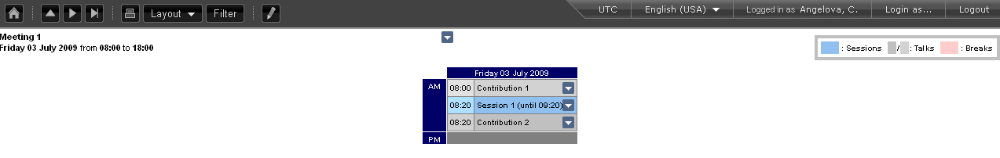
You can pass extra parameters to this compact style in order to choose the amount of days to display in one row and the start and end date. The parameters are:
- daysPerRow: number of days that you want to show per row (as a table row).
- firstDay: first day to be shown (must have the format 1-January-2010)
- lastDay: last day to be shown (must have the format 3-January-2010)
Let’s suppose you have a 2 weeks meeting:
http://indico.cern.ch/conferenceDisplay.py?confId=XXXX&view=nicecompact (where XXXX is the ID of your meeting)
and you want to display in the 1st row the 1st week and just underneath the second week, you can do it adding the extra paramenter daysPerRow as follows:
http://indico.cern.ch/conferenceDisplay.py?confId=XXXX&view=nicecompact&daysPerRow=7 (where XXXX is the ID of your meeting)

Table Of Contents
- 3. Meetings
- 3.1. Meeting
- 3.2. Creating a Meeting
- 3.3. Meeting Management Area
- 3.4. Meeting Display Area